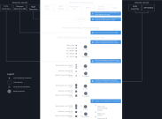

About
PHD (Phage & Host Daily) is a web application that combines information on phage-host interactions from seven sources — NCBI Virus, Virus-Host DB, MVP, RefSeq, GenBank, UniProt, and IntAct. PHD provides information on hosts for prokaryotic viruses at the species resolution using two alternative taxonomic classification systems, NCBI Taxonomy or Genome Taxonomy Database (GTDB). Analogously, virus species are classified according to NCBI Taxonomy or International Committee on Taxonomy of Viruses (ICTV).
PHD also points to genome assemblies available for each virus species by keeping track of the NCBI Assembly resource and the INPHARED database of complete phage genomes.
PHD also publishes daily reports on the current catalog of phage-host interactions.
Methods
PHD integrates information from several data sources to collect data related to virus genomic sequences, host information, and taxonomic classification.

- Names and/or NCBI taxonomy identifiers (taxIds) of hosts are extracted from nucleotide/protein sequence records of viruses available in six source databases:
- The extracted host names/taxIds are queried in TaxonKit against NCBI Taxonomy to retrieve full taxonomic lineages of hosts including their names, ranks, and taxIds. Only prokaryotic host species (from Bacteria or Archaea) are included in further steps. For example:
Escherichia coli species 562 Escherichia genus 561 Enterobacteriaceae family 543 Enterobacterales order 91347 Gammaproteobacteria class 1236 Proteobactertia phylum 1224 Bacteria superkingdom 2
- An additional taxonomic information (if available) for each prokaryotic host species is retrieved from Genome Taxonomy Database (GTDB).
- Interaction assignments between virus sequence records and the prokaryotic host species are collected from the source databases.
- Virus taxIds provided in sequence records are used to retrieve virus taxonomic lineages from NCBI Taxonomy. The obtained virus species taxIds or sequence accessions are used to retrieve virus taxonomic lineages (if available) in International Committee on Taxonomy of Viruses (ICTV). Sequence accessions are then assigned to the appropriate virus species. For example, three genomic sequences (MN125599, MN125600, and NC_049813) belong to the Escherichia virus 12210I species.
- Sequence accessions within virus species are grouped into genome assemblies based on metadata provided in the NCBI Assembly database. For example, two sequence accessions - MN125599, MN125600 - are part of one genome assembly from GenBank (assembly accession: GCA_009903655) while the third sequence NC_049813 is a separate genome assemble from RefSeq (assembly accession: GCF_009671745). Assembly level category (i.e., Complete or Scaffold or Contig or unknown) is assigned to each virus assembly based on information provided by NCBI Assembly and INPHARED databases.
- Source databases are assigned to each interaction between virus and host species. For example, the interaction between Escherichia virus 12210I and E. coli was covered by three source databases (i.e., NCBI Virus, Virus-Host DB, and RefSeq).
Cite PHD
If you find PHD useful in your work please cite:
Albrycht K et al. (2022). Daily reports on phage-host interactions.